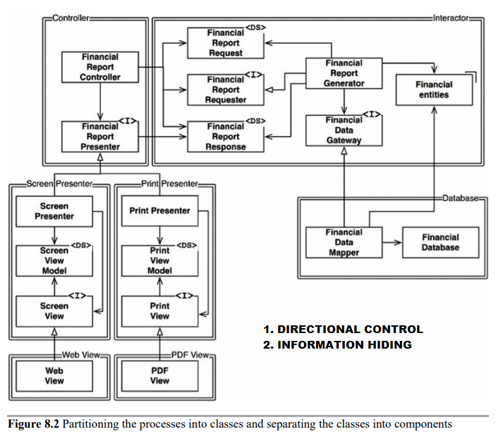

Clean Architecture
PART III
Design Principles
Robert C. MartinThe SOLID principles tell us how to arrange our functions and data structures into classes, and how those classes should be interconnected
The goal of the principles is the creation of mid-level software structures that:
- Tolerate change
- Are easy to understand
- Are the basis of components that can be used in many software systems
The history of the SOLID principles
- 👶Robert C. Martin began to assemble them in the late 1980
- Over the years, the principles have shifted and changed. Some were deleted. Others were merged. Still others were added. The final grouping stabilized in the early 2000s
- 👦 Michael Feathers 2004
SOLID
SRP: THE SINGLE RESPONSIBILITY PRINCIPLE
- A function should do one, and only one, thing.
- A module should be responsible to one, and only one, user or stakeholder
- A module should be responsible to one, and only one, actor.
These problems occur because we put code that different actors depend on into close proximity. The SRP says to separate the code that diferent actors depend on.
MERGES
Two different developers, possibly from two different teams, check out the Employee class and begin to make changes. Unfortunately their changes collide. The result is a merge.In our example, the merge puts both the CTO and the COO at risk. It’s not inconceivable that the CFO could be affected as well.
SOLUTIONS
Facade pattern
SOLID
OCP: THE OPEN-CLOSED PRINCIPLE
-
A software artifact should be open for extension but closed for modification.
1988 by Bertrand Meyer - If simple extensions to the requirements force massive changes to the software, then the architects of that software system have engaged in a spectacular failure.


OCP
- The goal is to make the system easy to extend without incurring a high impact of change.
- This goal is accomplished by partitioning the system into components, and arranging those components into a dependency hierarchy that protects higher-level components from changes in lower-level components.
SOLID
LSP: THE LISKOV SUBSTITUTION PRINCIPLE
- If for each object o1 of type S there is an object o2 of type T such that for all programs P defined in terms of T, the behavior of P is unchanged when o1 is substituted for o2 then S is a subtype of T
The only way to defend against this kind of LSP violation is to add mechanisms to the User (such as an if statement) that detects whether the Rectangle is, in fact, a Square. Since the behavior of the User depends on the types it uses, those types are not substitutable.
EXAMPLE LSP VIOLATION
Assume that we are building an aggregator for many taxi dispatch services.LSP
- The LSP can, and should, be extended to the level of architecture. A simple violation of substitutability, can cause a system’s architecture to be polluted with a significant amount of extra mechanisms.
SOLID
ISP: THE INTERFACE SEGREGATION PRINCIPLE

-
ISP AND LANGUAGE
This is the primary reason that dynamically typed languages create systems that are more flexible and less tightly coupled than statically typed languages. -
ISP AND ARCHITECTURE
It is harmful to depend on modules that contain more than you need.
SOLID
DIP: THE DEPENDENCY INVERSION PRINCIPLE
- The Dependency Inversion Principle (DIP) tells us that the most flexible systems are those in which source code dependencies refer only to abstractions, not to concretions.
- It is the volatile concrete elements of our system that we want to avoid depending on. Those are the modules that we are actively developing, and that are undergoing frequent change.
- Don’t refer to volatile concrete classes.
- Don’t derive from volatile concrete classes.
- Don’t override concrete functions.
- Never mention the name of anything concrete and volatile.